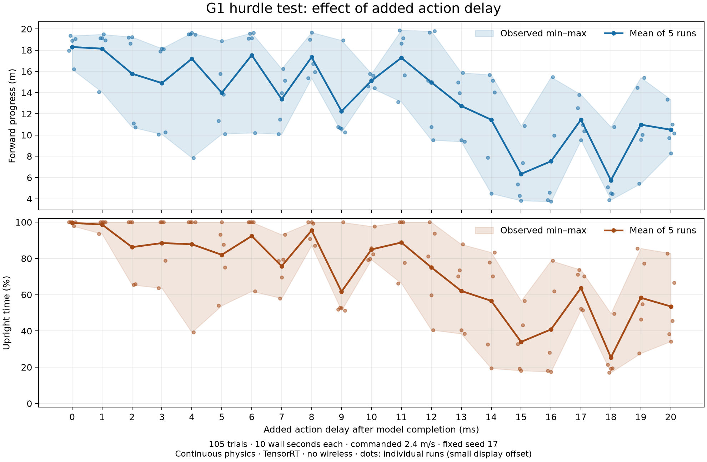

Robot control · interfaces and measurements
Metatron and SONIC interfaces; added action delay
What the models receive, where feedback runs, and how 0–20 ms of added action delay affected a simulated G1 across 105 trials.
Measured result: larger delays generally reduced movement quality
All 105 trials completed: five runs at each added delay from 0 to 20 ms. Each trial lasted 10 wall seconds. Mean forward progress was 18.294 m at 0 ms and 10.503 m at 20 ms; mean upright time was 99.60% and 53.53%, respectively. The differences are not monotonic at every 1 ms step, and repeat ranges are wide.

Forward progress is final root X minus initial root X. Upright time is the percentage of recorded simulation duration for which the preceding root height is at least 0.5 m. It is a height-based measure, not proof of balance, collision-free traversal or full-course completion.
| Added delay (ms) | Progress mean (m) | Progress min–max (m) | Upright mean (%) | Upright min–max (%) |
|---|---|---|---|---|
| 0 | 18.294 | 16.195–19.356 | 99.60 | 97.98–100.00 |
| 1 | 18.137 | 14.047–19.489 | 98.71 | 93.54–100.00 |
| 2 | 15.784 | 10.744–19.243 | 86.25 | 65.43–100.00 |
| 3 | 14.894 | 10.068–18.153 | 88.48 | 63.60–100.00 |
| 4 | 17.192 | 7.860–19.623 | 87.84 | 39.20–100.00 |
| 5 | 13.979 | 10.093–18.854 | 81.99 | 53.97–100.00 |
| 6 | 17.529 | 10.212–19.627 | 92.39 | 61.94–100.00 |
| 7 | 13.377 | 10.083–16.242 | 75.72 | 58.01–93.11 |
| 8 | 17.336 | 15.365–19.670 | 95.44 | 87.14–100.00 |
| 9 | 12.245 | 10.270–18.924 | 61.70 | 51.27–100.00 |
| 10 | 15.118 | 14.438–15.782 | 84.98 | 79.31–97.70 |
| 11 | 17.277 | 13.124–19.882 | 88.80 | 66.28–100.00 |
| 12 | 14.972 | 9.530–19.784 | 75.09 | 40.56–100.00 |
| 13 | 12.741 | 9.387–15.871 | 62.09 | 38.48–87.79 |
| 14 | 11.447 | 4.497–15.680 | 56.64 | 19.39–83.37 |
| 15 | 6.338 | 3.824–10.853 | 33.97 | 18.11–56.59 |
| 16 | 7.534 | 3.739–15.468 | 40.87 | 17.51–78.77 |
| 17 | 11.445 | 9.515–13.801 | 63.76 | 51.55–73.70 |
| 18 | 5.738 | 3.893–10.758 | 25.34 | 17.05–49.61 |
| 19 | 10.979 | 5.434–15.416 | 58.32 | 27.66–85.57 |
| 20 | 10.503 | 8.271–13.344 | 53.53 | 34.23–82.80 |
Executed experiment setup
This note reports only the latest experiment without wireless. The 105 measured movement windows sum to 17 minutes 30 seconds; startup, computational warm-up and verification add further elapsed time. A 10-second trial does not test completion of the 100 m course.
| Component or parameter | Executed setup |
|---|---|
| Robot and scene | Simulated G1; 17 hurdles, each 0.10 m high, 2.4 m wide and 0.08 m deep. First bar at x=10 m, then 5 m spacing; finish at x=100 m. |
| Model and hardware | Metatron v1 G1 on an RTX 5090 workstation; TensorRT 10.16.0.72, FP32, default TF32 enabled, optimization level 0, CUDA graphs. |
| Robot process | MuJoCo physics, measurements, returned-action selection and PD. |
| Model process | Robot/action history, task-goal generation and TensorRT inference. This is the logical edge role, on the same workstation. |
| Transport | Latest shared-memory slots. No wireless system or network in the application path. Other workloads remained active. |
| Start and duration | Nominal upright pose; immediate 2.4 m/s travel intent; 10 wall seconds. No initial standing wait or physical warm-up. Recovery can override travel goals after a fall. |
| Initialization | Model loading, validation and computational warm-up finish before measurement. Physics advances independently throughout the measured window. |
| Repeat design | 0–20 ms inclusive, 1 ms steps, five trials each: 105 trials. All 21 delays shuffled within each of five blocks; order seed 20261108. |
| Repeat variation | Fixed Torch seed 17, identical initial state, no deliberate sensor/pose changes. Asynchronous scheduling and action pickup can change trajectories. |
| Goal source | Project-specific hurdle/steering/recovery code using known hurdle positions and a saved jump reference; tracked-reference mode, 2.6 m trigger, world-space torso goals plus canonicalized jump-pose goals. |
| Geometry audit | Known simulator geometry drives collisions and task code. Executed configuration leaves model scene-box inputs as padding; it does not select the non-padding terrain provider. This is an executed-source audit, not a per-call tensor capture. |
Which components set the frequency?
- Physics and PD: scheduled independently with a 1 ms target period, nominally 1,000 Hz. Achieved rates were 965.99–976.70 Hz across trials.
- Observation publication: every 20 physics steps, nominally 50 Hz. At the achieved physics rates this corresponds to roughly 48.3–48.8 observation opportunities per wall second.
- History, goals and inference: triggered by a new available observation, with no separate model-frequency clock. An unread observation can be replaced by a newer one.
- Action application: checked at every physics step. PD keeps tracking the previous targets until a new action becomes eligible.
The physics process does not wait for computation. Each trial advanced 9.660–9.768 simulation seconds during approximately 10 wall seconds. Maximum simulation-clock lag across trials was approximately 233–339 ms. Continuous physics is established; strict real-time execution is not.
Where the added delay sits
Robot measurement → latest observation slot
→ history + goals + input preparation → TensorRT
→ completed action → added wall-time delay
→ next eligible physics/PD tick → joint targets → torqueFor an action completed at time t_complete, the release time is t_release = t_complete + added_delay. The robot installs the newest eligible returned action, with no action-age cutoff. It holds the previous target if none is ready. The deliberately added waiting time is separate from actual computation, handoff and physics pickup time.
Action interval is the time between successive new actions. Action delay is the time from an observation to applying its action. These tests vary added delay without deliberately changing the observation schedule; achieved intervals can still vary with scheduling and action selection. A 1 ms change in the release setting is not a guarantee of exactly 1 ms change in total delay.
Zero-added-delay pipeline timing
The five zero-added-delay trials had observation-to-PD medians of 7.787–7.834 ms. “Zero action delay simulation” here means no deliberately added action wait: actual computation and pickup delay remain present, and physics continues during them.
| Measured component | Range of five trial medians (ms) |
|---|---|
| Observation pickup → preparation start | 0.684–0.722 |
| History/goal/input preparation | 4.945–5.018 |
| Inference wrapper, including the native call | 1.806–1.817 |
| C++/TensorRT call, nested within the wrapper | 1.444–1.448 |
| Output publication work | 0.045–0.047 |
| Completed action → physics/PD installation | 0.604–0.654 |
| Full observation → PD installation | 7.787–7.834 |
Each row shows the range of per-trial medians from the latest five zero-delay runs. The native-call row is nested within the wrapper and must not be added again. Component medians need not sum to the median of the full pipeline. The native timer includes the C++/TensorRT call and transfers; it is not a GPU-kernel-only measurement.
Metatron receives numerical goals and explicit history
The tested deterministic export accepts 39 input tensors: current state, eight historical state samples with paired raw actions, a separate nine-entry raw-action history, future body goals with masks, velocity/style cues and scene-box fields. One call returns one current set of 29 joint targets, PD gains and a raw action for history feedback. It does not return an action sequence. The released model card describes the same input contract.
The goal contains no text. A phrase such as “jump over the hurdle” must first be converted by task code into numerical targets. A table label such as “push off” is an explanation of a movement phase, not an accepted Metatron command.
Readable goal example and actual tensor layout
The following JSON is a readable illustration with invented coordinates. It is not the literal model feed or a validated jump trajectory. Each time is relative to the current observation; each position is an XYZ target in metres for the named foot link.
{
"coordinate_frame": "world",
"body": "left_ankle_roll_link",
"time_offsets_s": [
0.1,
0.25,
0.4,
0.6,
0.8
],
"positions_m": [
[
1.0,
0.11,
0.08
],
[
1.2,
0.11,
0.16
],
[
1.4,
0.11,
0.25
],
[
1.6,
0.11,
0.12
],
[
1.8,
0.11,
0.055
]
],
"position_enabled": true,
"orientation_enabled": false
}For the tested G1 export, world-goal tensors include ref_pos [1,5,33,3], ref_rot [1,5,33,4] and time_offsets [1,5], under the masked_mimic namespace. Position and rotation masks have a flattened size of 50: five times × five selected body parts × two properties. A second goal stream supplies canonicalized poses, independently of their world placement.
The five selected body parts are the torso, two hands and two feet. Multiple parts and future times are supplied together in one inference step; the output coordinates all 29 joints. The 33 body slots in the position array do not mean 33 independently enabled goal parts.
Masks specify what is constrained
A position mask enables a target; an orientation mask can remain false so that orientation is left free. A visible position target equal to [0,0,0] requests the origin; the same stored values with a disabled mask are unused. Masks are neural-network inputs, and unavailable items are excluded by attention. This is not merely an application-side test. Prompt interface.
Scene boxes are separate from body goals
The external fields are box centres and full dimensions, object position/orientation, and valid/visible flags. Centres are expressed in the object's frame; the object pose places them in the world. The tested export has one object slot containing two box slots. A sofa can, for example, use separate seat and backrest boxes. This capacity does not encode an arbitrary surrounding scene.
External scene input: centres + dimensions + object pose + flags
Inside the exported graph: eight corners per box → robot heading frame
→ 24 coordinates per box → learned scene embeddings
External goal input: body poses + arrival times + masks
Inside the exported graph: relative/canonicalized goal features
→ learned goal embeddings
Embeddings + robot history → transformer → condition/latent → action decoderThe 24 corner coordinates are an internal representation, not an extra tensor sent by the experiment application. Their conversion is inside the exported ONNX/TensorRT graph. Invalid boxes are padded and masked. The pinned geometry implementation specifies the coordinates and masks.
World-goal features include target-minus-current body position in the current heading frame, relative rotations and arrival times. Separate encoders produce 1,024-dimensional embeddings; a six-layer transformer combines available information, and the action decoder also receives current observations and the previous action. Canonicalized pose targets use the target pose's own torso/heading and lowest body height. Network details.
Experiment-specific correction: the two-box provider described above exists in the local adapter, but the executed hurdle configuration does not select it. Its model scene-box fields remain padding. Hurdle geometry reaches the task code and simulator; these trials do not demonstrate that Metatron perceived the bars through the scene-box embedding.
The hurdle skill is project-specific goal-generation code
A skill is ordinary code developed offline by a human or coding agent, then executed at runtime to update goals. It is not generated by Metatron at each step. In this project the hurdle adapter was written during setup; it is not NVIDIA's exact published hurdle skill.
Our reference-jump mode loads saved body poses and orientations, aligns the reference with a known bar, samples future reference frames and packs numerical goals. The tested configuration uses a 2.6 m trigger, canonicalized reference jump-pose targets and world-space torso goals; after clearance it returns to steering, with recovery goals available after falling.
Saved reference motion + known hurdle geometry + robot state
↓
project-specific skill code
↓
numerical body goals + times + masks
↓
MetatronNVIDIA's published example similarly aligns a reference jump over known bars and supplies torso/hand/foot goals, but its illustrated scene has four 20 cm hurdles and different approach settings. Those demonstrations are not measurements of our 17-bar, 10 cm scene. Published skill development and hurdle example.
SONIC: a motion-vector interface with robot/action history
SONIC is another learned whole-body controller. In the released v1.1 configuration its decoder receives one current 64-dimensional motion vector plus 930 robot/action-history values: ten samples each of base angular velocity (3), joint positions (29), joint velocities (29), previous actions (29) and gravity direction (3). Total input size is 994. There is no explicit history of earlier motion vectors in this decoder input. Released observation configuration.
One controller call produces one current joint-target action. Holding a motion vector across calls still allows different actions because robot feedback changes; it does not automatically advance through a future motion sequence.
The authors call the learned representation a “token.” At the external interface it is a floating-point vector. Internally, the v1.1 encoder produces two 32-dimensional vectors with 32 quantization levels per dimension. Their nominal combined space has 32^64 = 2^320 ≈ 2.1 × 10^96 combinations, not a list of that many known safe movements. The flattened command occupies 256 bytes as 64 float32 values, excluding protocol fields and hand targets. Model configuration; encoder/decoder implementation.
Different callers ultimately supply the same motion-command representation
Speed/direction/style → motion planner → reference poses → encoder → motion vector
Human/robot reference motion ────────────────────────────→ encoder → motion vector
Fine-tuned GR00T ─────────────────────────────────────────────────→ motion vectors
Selected motion vector + fresh robot/action history → SONIC → joint targets → PDThus GR00T is a caller, ZMQ is a transport, and planner commands are an upstream conversion path. They are not separate command inputs to the underlying SONIC decoder. The speed-command planner uses desired velocity/direction/style and recent robot poses to generate future reference motion; the reference is then encoded. Planner interface.
VLA examples for humanoids
GR00T N1.7 documents a Unitree G1 workflow using SONIC motion commands. Figure's Helix 02 is another humanoid VLA system: Figure reports a 200 Hz joint-target layer followed by a learned 1,000 Hz whole-body controller. That 1,000 Hz controller belongs to Helix, not SONIC, and is more than a joint PD loop. Neither system was deployed in this experiment. GR00T integration; Helix 02 technical description.
GR00T supplies a sequence while SONIC closes the feedback loop
GR00T accepts images, text instructions and robot state. The documented SONIC workflow fine-tunes it on task demonstrations to predict motion vectors and hand targets. Per future step: 64 motion values + seven left-hand and seven right-hand targets, totaling 78 values. Default output is 40 steps, or 0.8 s at 50 Hz; the configured inference rate is 2.5 Hz. The client sends one selected step at a time, and skips expired steps when a delayed sequence arrives. Predicted vectors are transported as float32 and need not lie exactly on the encoder's quantization levels. Matching GR00T and SONIC checkpoints is required. Training workflow; Inference interface and timing.
SONIC's paper reports 1–2 ms per controller forward pass and about 12 ms per optional planner forward pass on onboard Jetson Orin with TensorRT/CUDA graphs. Its controller updates at 50 Hz; the paper's separate low-level command publisher runs at 500 Hz. These are different timing quantities. They are published measurements, not measurements on our workstation. Deployment timings.
Action chunking maintains a supply of future commands while a slower model computes. It does not eliminate delayed feedback. Keeping the whole-body controller local gives it fresh robot measurements even when the upstream command is older. Moving that controller across a delayed link would expose its own feedback loop to delay. We did not run SONIC or GR00T, and have not measured a delay-tolerance comparison against Metatron. Methods such as real-time action chunking additionally coordinate a new predicted sequence with actions already committed during computation; these Metatron trials did not implement that method.
Verification, interpretation and data
All 105 reports were independently rechecked: five runs per delay, identical initial state and engine, exact added-delay release times, joint-target mapping, and bytewise equality of all 39 consumed inputs against the full publication path in six startup cases including active recovery. All runtime source files match across trials; only the experiment manager changed for verification and resume.
Every model computation fully inside the recorded physics window overlapped physics ticks. Thirty-eight computations crossing a window boundary are reported separately. The initial verifier stopped after trial nine because its last computation began after the final physics tick. Completed motion data was retained; the boundary check was corrected and collection continued at trial ten. A resume counting error was fixed before any additional trial ran. All 106 root/per-trial source archives were verified. Normal services were restored, with no persistent backend deployment.
The results show degradation under larger added delays in this particular implementation and scene. They do not establish a universal maximum tolerable delay, an exact 1 ms failure threshold, or a population fall probability. Fixed initial conditions and scheduling variation are not a randomized sample of terrain, disturbances or robot states. No earlier experiment or removed synchronous-simulation result is included.
- All 21 delay averages, standard deviations and observed ranges (CSV)
- All 105 trial metrics (CSV)
- Sanitized setup, timing components, model identities and verification summary (JSON)
- Full-resolution experiment plot (PNG)

This public note contains derived measurements and technical explanations. Raw process logs, host identities, private paths and access configuration are omitted. Illustrative goal data is labelled separately from measured results.